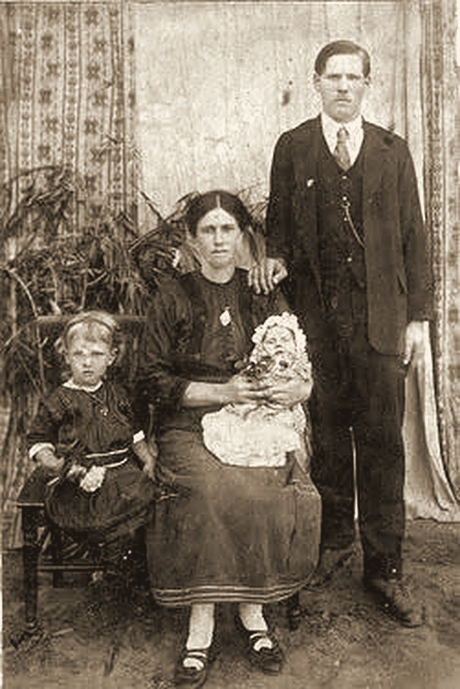

Teil III · Die Pioniere von 1828, die Mosel und die Klingen von Solingen
Kapitel 10 — Von den Schmieden in Solingen nach Capivari und Brusque (Doerner, Eller und Peters)
Jede Klinge bewahrt die Hitze der Schmiede. Jede Familie bewahrt die eines Neuanfangs.
51,2° N · 7,1° O, Solingen, Rheinland · 27,1° S · 48,9° W, Brusque, SC
Eines Tages erzählte mir mein Großvater Fernando Dörner, er habe in Milizen von Kolonisten mitgemacht, die eine Invasion Südbrasiliens durch Deutschland unterstützen wollten, und später habe er die Seiten gewechselt. Kein Papier der Familie hält das fest. Bevor ich dahin komme, muss ich erzählen, woher er stammte, und schon das ist schwierig: Das Profil seines Vaters bei FamilySearch ist, nach der trockenen Notiz eines Forschers, eine Verschmelzung von drei oder vier verschiedenen Männern.
Der Klang des Ambosses
Rheinland, Königreich Preußen, um 1854
In Solingen hörte man vor jedem anderen Geräusch den Hammer. Seit Jahrhunderten lebte die Stadt auf den Höhen des Bergischen Landes, zwischen dem Rhein und dem Tal der Wupper, von Klingen: Schwertern, Messern, Scheren, Rasiermessern. Die Bäche, die zur Wupper hinabflossen, trieben die Schleifsteine an, und in jedem Tal stand ein Kotten, die kleine Werkstatt, in die das Metall noch dunkel aus der Schmiede kam und aus der es poliert wieder hinausging. Es war ein Gewerbe der Häuser und der Familien, in dem das Handwerk zusammen mit dem Nachnamen vom Vater auf den Sohn überging.
Aus dieser Welt stammt wahrscheinlich mein Urgroßvater Carlos Dörner. Was ein brasilianisches Dokument über ihn sicher sagt, ist wenig, aber fest: Der Eintrag seiner zweiten Eheschließung im Jahr 1900 nennt ihn einen Sohn von Guilherme Dörner und Joanna Lauterjung, fünfundvierzig Jahre alt und „gebürtig aus Europa“. Geboren wurde er also um 1854 oder 1855.
Ich muss hier korrigieren, was die ersten Fassungen dieses Buches sagten, denn sie hatten von FamilySearch abgeschrieben. Dort erscheint Carlos als „Carl Reinhard Dörner“, geboren am 20. November 1854 in Solingen, in einem Profil, das mehrere Männer vermischt. Ein Forscher hat darin eine trockene Notiz hinterlassen: obviously a merger of 3-4 different men. Für die Verwirrung gibt es mindestens drei Gründe. Erstens hatte Carlos zwei Geburtsurkunden, und das allein genügt schon, um eine Person in einem Register zu verdoppeln. Zweitens hatte er einen Sohn namens Carlos Reinaldo Doerner, und „Reinaldo“ ist die portugiesische Form von Reinhard: Sehr wahrscheinlich ist der Name des Sohnes am Vater hängen geblieben. Drittens hatte Guilherme Brüder, und es ist möglich, dass auch andere Dörner-Familien, die von Onkeln des Carlos, einen Sohn namens Carl hatten. In einer Zeit, in der man in allen Zweigen die Namen der Großväter wiederholte, kann ein in den 1850er-Jahren geborener „Carl Dörner“ unserer sein oder ein Vetter von ihm. Deshalb bleiben das Datum 20. November 1854 und die Solinger Taufe in diesem Buch eine Hypothese, die noch zu prüfen ist, und keine Tatsache.
Die Einträge, die FamilySearch gesammelt hat, beginnen mit einer Taufe in Deutschland und enden auf der anderen Seite des Ozeans mit einem Landwirt in Santa Catarina, der einfach Carlos Doerner heißt. Dazwischen liegt eine Lücke, die ich noch nicht füllen konnte. Ich weiß nicht, in welchem Jahr er sich einschiffte und auf welchem Schiff, ob er als Kind mit den Eltern kam oder als junger Mann allein. Die Familienüberlieferung verbindet den Namen Lauterjung mit den Solinger Messermacherzünften. Das ist plausibel, denn die ganze Stadt lebte von der Schneidwarenherstellung, aber ich notiere es als Überlieferung und nicht als Beweis. Kein Dokument, das ich in Händen habe, sagt, dass Wilhelm oder Joannas Vater Eisen geschmiedet hätten.
Trotzdem beginne ich die Geschichte der Dörner mit dem Bild des Ambosses, weil es einem Gedanken dient, der sich durch das ganze Buch zieht. Johann Haas brachte aus Bayern das Lot und den Gips mit. Die Meier aus Heumaden bauten Räder. Die Dörner kamen aus der Klingenstadt. Matheus, Lucas: Ihr stammt von Menschen ab, die hartes Material in etwas Nützliches zu verwandeln wussten. In der Kolonie übte keiner von ihnen sein ursprüngliches Handwerk aus. Carlos Doerner erscheint in den brasilianischen Papieren als Landwirt. Die Hand, die vielleicht gelernt hatte, Stahl zu härten, lernte nun, den Wald zu roden, am Hang Mais zu pflanzen und fünfzehn Kinder großzuziehen.
Wenn in der Meteorologie eine Luftmasse einen Ozean überquert, verliert sie manche Eigenschaften und gewinnt andere hinzu, aber ein guter Analytiker erkennt ihre Herkunft noch immer. Wir nennen das Modifikation. Auch die Einwandererfamilien wurden so modifiziert. Sie verloren das Handwerk, die Sprache des Dorfes, manchmal die Konfession, und bewahrten etwas anderes, das schwerer zu benennen und hartnäckiger ist. In diesem Kapitel suche ich dieses Andere im Zweig meiner Mutter.
Die Eller aus Westfalen
Westfalen und São Bonifácio, 1850er- und 1860er-Jahre
Der zweite Strom dieses Kapitels kommt aus Westfalen. Franz Adam Eller wurde am 3. März 1832 in einer Pfarrei St. Peter und Paul in Westfalen getauft. FamilySearch sagt nicht, in welcher der vielen Kirchen dieses Namens, und die Notiz eines anderen Forschers erklärt, dass „Adam“ sein zweiter Vorname war und nicht Teil des Nachnamens. Franz Adam heiratete Anna Maria Knopker, von der ich fast nichts weiß außer dem Namen und dass sie in Deutschland geboren wurde. Aus dieser Ehe ging Anna Eller hervor, meine Urgroßmutter.
Die ersten Fassungen dieses Buches sagten, Anna sei 1858 in Rio Grande do Sul geboren, und ich hatte sogar schon eine Seite über das Mädchen geschrieben, das den Minuano, den kalten Südwind der Pampa, früher gekannt haben sollte als die Buchstaben. Ich musste sie streichen. Bei FamilySearch tragen Datum und Ort von Annas Geburt einen Vermerk des Systems selbst, dass sie automatisch erzeugt wurden, das heißt, von einem Algorithmus ausgefüllt, ohne jedes Dokument. Ihre Geschwister erzählen eine andere Geschichte. Guilherme Eller wurde im August 1860 in Deutschland geboren; Mathilde kam am 31. Januar 1866 zur Welt und Maria am 28. Oktober 1869, beide in São Bonifácio, Santa Catarina. Die Eller kamen also in der ersten Hälfte der 1860er-Jahre aus Westfalen in die Kolonien Teresópolis und São Bonifácio, und Anna wurde um 1858 bis 1860 geboren, wahrscheinlich noch in Deutschland. Kein Papier, das ich kenne, bringt sie nach Rio Grande do Sul. Daraus bleibt eine Lehre, die für den ganzen Stammbaum gilt: Eine Angabe aus einem gemeinschaftlichen Stammbaum ohne Quelle ist nur eine Vermutung, die wie ein Dokument aussieht. In den Registern erscheint Annas Beruf als doméstica, Hausfrau, und so nannte man damals fast jede Arbeit einer Frau.
Sicher ist, dass Anna Eller und Carlos Doerner in Santa Catarina heirateten und in der Gegend von Imaruí und São Martinho eine Familie gründeten. São Martinho war damals ein Distrikt von Imaruí, und deshalb erscheinen dieselben Orte in den Dokumenten mal unter dem einen, mal unter dem anderen Namen.
Die erste Ehe wurde wahrscheinlich um 1877 geschlossen: Das älteste Kind, das ich in den Taufbüchern gefunden habe, Wilhelm Dörner, Sohn von Carl Dörner und Anna Eller, wurde am 4. August 1878 getauft. Danach folgen eine Maria Anna 1880, ein Carlos Reinaldo 1882 (der Sohn, dessen Name, wie ich erzählt habe, mit dem des Vaters verwechselt wurde), eine Paulina Rosalia im Januar 1886, ein Robert 1890 und eine Wilhelmina 1892. FamilySearch führt außerdem eine Maria, verheiratet mit Alberto Feuser, geboren im Mai 1886, was neben Paulina Rosalia, die vier Monate früher geboren wurde, unmöglich ist; eines der beiden Daten ist falsch. Carlos Reinaldo, der Sohn von 1882, lebte in Vargem do Cedro, heiratete 1907 Catharina Back, hatte neun Kinder und starb am 2. Oktober 1953. Seine Einträge, Taufe, Heirat und Tod, stehen alle in den Registern, und darum bin ich mir so sicher, dass der „Reinhard“ im Profil des Vaters zu ihm gehört. Die Erinnerung der Familie zählt zehn Kinder aus dieser Ehe: Carlos Filho, Guilhermina, Adolfo, Bertha, Maria, Guilherme, Augusto, Anna, Germano und Fernando. Die beiden Listen stimmen nicht ganz überein. Guilherme ist Wilhelm und Guilhermina ist Wilhelmina, aber Robert und Paulina Rosalia fehlen in der Liste der Familie, und Adolfo, Augusto und Germano habe ich in den Registern noch nicht gefunden. Bertha habe ich gefunden, aber auf der anderen Seite: Sie wurde am 7. März 1901 in Vargem do Cedro geboren und ist eine Tochter aus der zweiten Ehe. Vielleicht sind einige Kinder klein gestorben und aus der Erinnerung verschwunden. Vielleicht waren Taufnamen und Rufnamen verschieden, wie es oft vorkam. Ich halte den Unterschied fest und gehe weiter: Die Zahl zehn ist die der Familie, und es ist Sache der nächsten Forscher, sie in den Büchern zu prüfen.
Der Jüngste dieser ersten Reihe war Fernando Dörner, geboren am 24. August 1897 in São Martinho. Er ist mein Großvater mütterlicherseits. Kurz nach seiner Geburt, um 1898, starb Anna Eller. FamilySearch verlegt ihren Tod nach Imaruí. Das genaue Datum steht in keinem Dokument, das ich gesehen habe. Sie war etwa vierzig Jahre alt und hinterließ ein Kind in der Wiege und ein Haus voller Kinder. Sie ist die erste der Frauen in diesem Buch, die fast zugleich mit der Geburt eines Kindes stirbt. Sie wird nicht die letzte sein, und die andere werdet ihr in Kapitel 12 kennenlernen. Damals gehörte auch der Tod im Kindbett zu den Bedingungen, unter denen die Familien lebten.
Eintrag Nummer 23
Kapelle São José, Capivari, 29. April 1900
Ein fünfundvierzigjähriger Mann, Witwer und mit einem Haus voller Kinder, bleibt in einer Kolonie nicht lange allein. Wer kocht, wer kümmert sich um den zweijährigen Jüngsten, wer melkt die Kuh, während er auf dem Feld ist? In der Kolonistengesellschaft war die zweite Ehe eines Witwers eine Frage des Überlebens, und die Nachbarn und der Pfarrer wussten das. Ich stelle mir vor, dass Carlos Doerner ungefähr so an einem Herbstmorgen des Jahres 1900 zur Kapelle São José in Capivari kam, um Hulda Peters zu heiraten.
Hulda war am 20. August 1870 in Capivari geboren und am 5. Dezember desselben Jahres in Teresópolis, dem heutigen Águas Mornas, getauft worden. Sie war die Tochter von João Peters (in den älteren Einträgen Johann Heinrich Theodor Peters) und Paulina Büchner. Sie war neunundzwanzig, sechzehn Jahre jünger als der Bräutigam. Mit der Heirat bekam sie auf einen Schlag eine ganze Familie zu versorgen.
In der Familie wurde die Geschichte von Carlos Doerner schief erzählt. Mehr als einmal hörte ich, halb lachend, der Urgroßvater habe „zwei Frauen gehabt“, und es gab sogar welche, die von dreien sprachen. Fünfzehn Kinder und zwei Ehefrauen, in einer Zeit, in der kaum jemand die Daten kannte, brachten solche Legenden hervor. Das Dokument löst sie auf. Carlos war Witwer und heiratete erneut, wie es Gesetz und Kirche vorsahen.

Ich öffne das Bild des Eintrags auf dem Bildschirm, vergrößere es und lese Zeile für Zeile, wie ich es in Moosbach mit der alten deutschen Schrift getan habe (diese Geschichte kommt noch). Hier ist die Schrift die schräge Handschrift eines Landpfarrers aus dem Inneren von Santa Catarina, auf Portugiesisch und in der Rechtschreibung jener Zeit: „Es wurden in den Stand der Ehe aufgenommen Carlos Dörner im Alter von fünfundvierzig Jahren, ehelicher Sohn von Guilherme Dörner und Joanna Lauterjung, mit Hulda Peters im Alter von neunundzwanzig Jahren, eheliche Tochter von João Peters und Paulina Büchner, er gebürtig aus Europa und sie aus Capivary, und beide wohnhaft in Capivary“. Die Altersangaben passen zu den Geburtsdaten: Er war im November fünfundvierzig geworden, und sie würde im August dreißig werden. Am rechten Rand stehen die Nummer, 23, und die beiden Namen.
Viele Jahre lang kursierte in der Forschung eine zweite Fassung des Eintrags Nummer 23, deren Herkunft ich nie finden konnte. Sie sprach von derselben Kapelle und demselben Tag, nannte aber andere Trauzeugen (Augusto Peters und Henrique Hömke), sagte, die Brautleute hätten in Braço do Norte gewohnt, war von einem Padre Francisco Auling unterschrieben und enthielt einen schönen Satz: „nach Dispens vom Hindernis der gemischten Religion”. Ich bin zum Bild zurückgekehrt und habe um eine zweite, sorgfältige Lesung Zeile für Zeile gebeten. Das Buch sagt etwas anderes: Die Ehe wurde in Gegenwart des Hochwürden Frederico Tombröck geschlossen, mit den Trauzeugen José May und João Peters, dem Vater der Braut, und der Eintrag ist von Padre Huberto Ohters unterschrieben. Es gibt keine Dispens, keinen Auling, keinen Hömke und kein Braço do Norte. Jene zweite Fassung stützt sich auf kein Dokument, das irgendjemand gesehen hat, und ich lege sie beiseite.
Archivkarte: Eintrag Nr. 23/1900, Heiratsbuch, das die Kapelle São José (Capivari) und die Kapelle São Ludgero umfasst; Gegend von Braço do Norte, SC. Heirat von Carlos Dörner (45 Jahre, aus Europa gebürtig) und Hulda Peters (29 Jahre, aus Capivari) am 29. April 1900, in Gegenwart des Hochwürden P. Frederico Tombröck; Trauzeugen José May und João Peters; beide wohnhaft in Capivari; unterschrieben von P. Huberto Ohters. Keine Erwähnung einer Dispens. Datei: imagens/casamento_carlos_doerner_hulda_peters_1900.png.
Als Wissenschaftler behalte ich die Lehre. Ein Satz, der oft wiederholt wird, mit dem Namen eines Pfarrers und allem, muss aus keinem Dokument stammen. Wenn zwei Fassungen sich widersprechen, entscheidet die Quelle, die man öffnen und lesen kann, und hier liegt sie vor uns.
Ich halte mich an das, was die Seite sagt: eine katholische Trauung, in einer katholischen Kapelle, vor katholischen Priestern. Während der Forschung habe ich einmal geschrieben, die Doerner seien lutherisch gewesen und die Ehe habe deshalb eine Dispens gebraucht. Das war falsch. Die Doerner waren katholisch, so wie die Familie sie immer in Erinnerung hatte und wie die Papiere bestätigen: Die Kinder aus Carlos’ erster Ehe erscheinen in den Verzeichnissen der Registros da Igreja Católica, der katholischen Kirchenbücher von Santa Catarina, und wurden mindestens seit 1878 von Priestern getauft.
Es gab allerdings lutherische Dörner in jener Landschaft, und vielleicht kam die Verwechslung daher. In einem Sammelband mit Studien über die Kolonie Santa Isabel, herausgegeben von Toni Jochem, verzeichnet ein Aufsatz von Antônio Carlos Glück und Lucas Mendes Laureth über die lutherischen Holländer der Region eine Henriette Dörner, geboren am 24. Oktober 1866, getraut am 12. Juli 1891 in der evangelischen Kirche von Santa Isabel. Derselbe Aufsatz erzählt, dass der lutherische Pastor Christian Zluhan ab 1879 das Tal des Capivari hinabzog, um die verstreuten evangelischen Familien im Süden zu betreuen, und 1886 bis nach Braço do Norte kam. Nichts deutet darauf hin, dass Henriette mit Carlos verwandt war. Eine Zeit lang glaubte ich auch, Hulda sei am Vortag der Hochzeit in die Kirche aufgenommen worden, wegen eines Akts vom 28. April 1900 in einem Verzeichnis; die Prüfung zeigte, dass dieser Eintrag in Wahrheit die Taufe der Tochter Joanna im Juli 1902 ist. Es bleibt also kein Papier, das bei dieser Hochzeit von einer anderen Konfession spricht.
Auf der Seite der Haas und auf der Seite der Doerner also Katholiken. Auf der Seite eurer Mutter waren, wie ihr in den nächsten Kapiteln sehen werdet, fast alle lutherisch: die Lohmann, die Hoeveler und die Funke mit ihrem Adventskranz. Als Bárbara und ich 1995 heirateten, brachten wir, soweit ich weiß, zum ersten Mal beide Glaubenstraditionen unter ein Dach.
Mit Hulda hatte Carlos weitere Kinder. Die Familie bewahrt die Namen Laura, Clara, Carlos Júnior, Ida und Ricardo. Die Verzeichnisse geben eine andere Liste: Bertha, 1901; Joanna, 1902; Emma, 1903, die mit vierzehn Jahren starb; João, 1905; Gustavo, 1906; und einen Martinho. Die beiden Listen haben keinen einzigen Namen gemeinsam. Es kann Rufnamen geben, Kinder, die die Verzeichnisse nicht erfasst haben, oder Erinnerungen an Vettern und Cousinen, die sich mit denen an Geschwister vermischt haben.
Hier taucht der andere Carlos auf. Am selben FamilySearch-Profil hängt eine standesamtliche Heirat vom 9. Oktober 1893 in Águas Mornas, die eines Carl Dörner mit Charlotte Elisabetha Stock aus São Bonifácio, mit Kindern, die 1896, 1898 und 1900 geboren wurden: Emma, Teodoro und Daniel. 1893 war unser Carlos mit Anna Eller verheiratet, die 1897 noch Fernando bekommen sollte. Es sind also zwei Männer mit demselben Namen, Zeitgenossen, die nur wenige Meilen voneinander entfernt wohnten. Wahrscheinlich waren sie verwandt, vielleicht Vettern, Söhne von Brüdern des Guilherme; aber das ist noch eine Hypothese. Im Stammbaum, der dieses Buch begleitet, habe ich die beiden Familien getrennt. Zählt man die beiden Ehen unseres Carlos zusammen, kommt man auf die fünfzehn, die die Familie mit einer Mischung aus Stolz und Staunen wiederholt. Fünfzehn Kinder von zwei Müttern, Geschwister und Halbgeschwister, die zusammen im selben Haus aufwuchsen, und ein Jüngster der ersten Reihe, Fernando, der keine Erinnerung an die eigene Mutter bewahrt haben dürfte. Für ihn war Hulda die Frau, die ihn großzog. Die Papiere sagen nicht, wie er sie nannte.
Diese Zahl sagt auch etwas über das Land. Im Rheinland und in Westfalen, woher die Dörner und die Eller kamen, zerstückelte die Realteilung die Güter mit jeder Generation, bis kein Land mehr übrig war, das eine Familie ernähren konnte, und das war einer der Antriebe der Auswanderung. In der Kolonie in Santa Catarina passten fünfzehn Kinder nicht auf eine Parzelle von fünfundzwanzig Hektar. Die Lösung, die die Anthropologin Ellen Woortmann für die Kolonisten des Südens so gut beschrieben hat, war fast immer dieselbe: Ein Sohn blieb bei den Eltern und fand die anderen ab, und die übrigen zogen zu neuen Siedlungsgrenzen weiter, ins Alto Vale, in den Westen Santa Catarinas und nach Paraná. So verteilte sich die Familie, statt sich zu zerteilen. Mein Großvater Fernando war einer von denen, die gingen.
Fernando und Gertrudes
São Martinho, Santa Catarina, um 1921
In Kapitel 9 haben wir gesehen, woher Gertrudes Preiss kam. Sie wurde am 5. März 1896 geboren, Tochter von Emanuel (Manoel) Preis und Helena Michels, Enkelin von Bernard Preis und Ignazia Loch auf der einen und von Anton Michels und Angela Catharina Arns auf der anderen Seite. Sie war also eine Enkelin der sechsundneunzigjährigen Matriarchin und die Enkelin eines Jungen, der 1828 in Desterro an Land gegangen war. Als Gertrudes und Fernando heirateten, flossen in einem einzigen Paar fast alle Ströme von Teil III zusammen: die Mosel von Pünderich, der Hunsrück von Hermeskeil, Schweich bei Trier, Solingen und Westfalen. Ich habe immer gewusst, dass meine Großmutter mütterlicherseits „altes Blut aus Santa Catarina“ hatte, aber erst beim Zusammensetzen des Stammbaums merkte ich, wie viel. Über sie stammte Adelina von den ersten deutschen Kolonisten des Bundesstaates ab; über Fernando von einem Einwanderer aus dem Rheinland, vielleicht aus der Klingenstadt, und von einer jungen Frau aus Westfalen.
Das Hochzeitsdatum hat mir Mühe gemacht. Die Verzeichnisse von FamilySearch führen das Paar mehr als einmal. Ein standesamtlicher Eintrag, mit den verstümmelten Namen „Fernando Doermer e Gertruda Preuss“, nennt den 25. Februar 1913. Ein katholischer Eintrag, „Fernando Dorner e Gertrud Puno“, nennt den 9. Juli 1921. Und es gibt einen dritten, ebenfalls standesamtlich, ebenfalls aus São Martinho, mit demselben Tag und demselben Monat wie der erste: 25. Februar 1923. Damit löst sich das Rätsel. Neunzehnhundertdreiundzwanzig wurde in einem der Verzeichnisse als neunzehnhundertdreizehn gelesen. Das Paar heiratete am 9. Juli 1921 kirchlich und am 25. Februar 1923 auf dem Standesamt, dem cartório, vier Monate nach der Geburt der ersten Tochter, Hilda Ana, im Oktober 1922. Zuerst kirchlich und erst später standesamtlich zu heiraten, war in den Kolonien verbreitet. 1921 war er dreiundzwanzig Jahre alt und sie fünfundzwanzig.
Archivkarte: Heirat von Fernando Dörner und Gertrudes Preiss. (a) Kirchlich: „Brasil, Santa Catarina, Registros da Igreja Católica, 1714–1977“, Eintrag „Fernando Dorner and Gertrud Puno“, 09.07.1921, Vargem do Cedro (ark:/61903/1:1:6BGD-68BP). (b) Standesamtlich: „Brasil, Santa Catarina, Registro Civil, 1850–1999“, São Martinho, 25.02.1923 (ark:/61903/1:1:XSXC-4TP1); derselbe Eintrag erscheint auch mit dem Datum 25.02.1913 im Verzeichnis, wahrscheinlich eine Fehllesung des Jahres. In allen ist der Bräutigam Sohn von Carlos Doerner und Anna Eller.
Am 30. Oktober 1926 wurde in São Martinho die Tochter Adelina geboren. Sie war meine Mutter, die Dona Adelina aus Kapitel 1, die Frau, die bei der Eisernen Hochzeit, dem 65. Hochzeitstag, im Jahr 2012 bereit war, vor meiner Kamera ihr eigenes Leben zu erzählen. Sie heiratete meinen Vater 1947 und zog ins Alto Vale do Itajaí, weit weg von den Tälern im Süden, in denen sie geboren war. Ihre Eltern verließen São Martinho, lebten in Vidal Ramos und gingen später nach Brusque, ins Tal des Itajaí-Mirim. Die Daten hätte ich meine Mutter fragen sollen, und ich habe es nicht getan; am Ende habe ich sie aus den Einträgen der Kinder zusammengesetzt. Im Oktober 1926, als Adelina geboren wurde, war die Familie noch in São Martinho. Im März 1930 ließ sie bereits Kinder in Vidal Ramos eintragen: Ottilia, geboren im Januar 1929, die im Juni 1930 mit einem Jahr und fünf Monaten starb. Danach kamen Irma 1931, Lino Fernando 1937 und Celso, der 1939 geboren wurde und im selben Jahr starb. Im März 1948 heirateten Adelina und ihr Bruder Lindolfo am selben Tag standesamtlich, auf dem Standesamt von Vidal Ramos. Der Umzug nach Vidal Ramos fand also zwischen Ende 1926 und Anfang 1930 statt, und 1948 war die Familie noch dort.
Ein Text, den ich nicht kannte, schließt diese Lücken. 2011 veröffentlichte Fábio Sidney Thiesen im Jornal Mirim von Vidal Ramos (Ausgabe Nr. 508, 6. Juli 2011) ein Porträt des Paares, das aus der Erinnerung der Familie zusammengestellt war. Ihm zufolge kamen Fernando und Gertrudes im Mai 1927 auf dem Rücken von Maultieren nach Vidal Ramos, mit Hilda, Lindolfo und Adelina, die sieben Monate alt war und auf dem Arm der Mutter reiste. Die Rechnung passt zur Urkunde: Adelina wurde im Oktober 1926 geboren. Das erste Land lag am unteren Molungu, in einem Haus mit gestampftem Lehmboden, wo sie vier Jahre blieben, mit Hilfe der Familie Petry. Danach kauften sie Land in Santa Cruz und bauten ein Sägewerk auf, das ab 1931 die Haupttätigkeit der Familie war. Um 1935 zogen sie ins Zentrum, um einen Laden von Ernesto Brás Barni zu führen. Und 1964 zogen sie, auf der Suche nach ärztlicher Behandlung, nach Brusque, ins Haus der Tochter Hilda. Das ist Familienerinnerung in einer Zeitung, kein Dokument; aber die Daten, die ich prüfen kann, stimmen. Warum sie Vidal Ramos verließen, weiß ich zum Teil, weil Fernando selbst es mir erzählt hat, und ich erzähle es weiter unten.
Im September 2012, wenige Monate nach der Eisernen Hochzeit, kam die Familie Doerner zu einem Familienfest zusammen, und im selben Monat unternahmen wir die Reise nach Rio Grande do Sul, die ihr in Kapitel 12 sehen werdet. Von dem Fest blieben Fotos und ein Gefühl: dass die fünfzehn Kinder von Carlos Doerner zu Hunderten von Menschen geworden waren, die größtenteils nichts voneinander wussten. Es ist dasselbe Gefühl wie bei der Hundertjahrfeier der Haas im Jahr 2013.
Der Großvater mit einem einzigen Bild
Vidal Ramos und Brusque, 1927 bis 1981
Von diesem Großvater habe ich sehr wenig. Ich habe keinen Brief und keinen Gegenstand. Ich habe zwei Urkunden vom Standesamt, die über den Tod seiner Frau und die über seinen eigenen, die Erinnerung an Gespräche und ein einziges Bild, das erst auftauchte, als dieses Buch schon geschrieben war.

Es ist ein Atelierfoto aus dem Landesinneren: ein gemusterter Vorhang, eine Vase mit Blattpflanzen, ein Stuhl für das Mädchen. Fernando steht, in dunklem Anzug, mit Weste und Uhrkette, die Hand auf der Schulter seiner Frau. Er ist etwa dreißig und hat den ernsten Blick eines Menschen, der nur wenige Male im Leben für einen Fotografen posiert. Gertrudes sitzt und hält Adelina, die in Weiß gekleidet ist. Hilda Ana, im dunklen Kleid, schaut direkt in die Kamera. Als das Foto 2017 in den sozialen Netzwerken herumging, schrieb jemand aus der Familie, das Baby sei Onkel Lindolfo; aber es ist meine Mutter, und Onkel Lindolfo, damals etwa zweieinhalb Jahre alt, ist nicht auf dem Bild. Es ist das einzige Gesicht meines Großvaters, das ich außerhalb der Erinnerung kenne. Für uns Enkel war er der Opapa und Gertrudes die Omama. Falls ein Vetter oder eine Cousine noch ein anderes Foto von Fernando Dörner aufbewahrt, vor allem aus den Jahren in Vidal Ramos oder Brusque, dann ist es das Stück, das in diesem Archiv am meisten fehlt.
Auf der Seite der Haas hat der Fata sichtbare Spuren des Glaubens hinterlassen: Er war Kirchenältester in Ituporanga und Erbauer von Kirchen. Auch Fernando war ein sehr religiöser Mann. Der Artikel von 2011 erzählt, dass er die Erbauer der Kirche, des Pfarrsaals und der Schule von Vidal Ramos beherbergte und verpflegte, die Estrada da Igreja, die Kirchstraße, anlegte, Land für den Sportverein Clube Esportivo Fluminense und für die Schule Escola Cacilda Guimarães schenkte und mehrere Jahre lang delegado de polícia war, also örtlicher Polizeichef, ohne dafür etwas zu bekommen. Er sagt auch, dass er ein eifriger Leser war und Zeitschriften abonniert hatte, die nur mit Mühe an den Ort gelangten. Ich weiß noch nicht, in welchen Jahren er delegado war und wie sich das mit der Geschichte kreuzt, die er mir erzählt hat.
Die Eltern meiner Mutter gingen nicht direkt von São Martinho nach Brusque. Vorher lebten sie in Vidal Ramos, im Alto Vale, der Stadt, in der ich aufwachsen sollte. Dort geschah diese Geschichte, die kein Papier der Familie festhält.
Ich habe immer gern den Geschichten älterer Leute zugehört, und das blieb meiner Mutter nicht verborgen. Als ich schon auf die weiterführende Schule ging, kam mein Großvater zu uns ins Haus. Er hatte Hautkrebs, die Krankheit roch schon sehr stark, und er wollte vor seinem Tod die Angelegenheiten mit den Grundstücken regeln. Eines Tages fragte ich ihn, wie der Zweite Weltkrieg in Vidal Ramos gewesen sei. Ich fragte nicht, was er getan hatte. Er selbst spürte, dass er darüber sprechen musste.
Mein Großvater erzählte mir dann, dass er Hitler unterstützt und in Milizen von Kolonisten mitgemacht habe, die eine Invasion Südbrasiliens durch Deutschland unterstützen wollten. Er erzählte auch, dass er die Seiten gewechselt habe. Nach seinen Worten merkte er beim Lesen von Zeitschriften wie den Seleções do Reader’s Digest, dass er auf der falschen Seite stand. Der Wechsel wurde in Vidal Ramos nicht akzeptiert. Zusammen mit den Krankheiten meiner Großmutter war er einer der Gründe, die ihn bewogen, von dort wegzugehen und nach Brusque zu ziehen.
Er sagte, es vergehe kein Tag, an dem er nicht bereue, Hitler unterstützt zu haben, und das müsse er mit Gott ausmachen. Er sagte auch, ein Führer wie Hitler übe einen Zauber auf die Menschen aus, und das werde wieder geschehen. Er starb 1981. Ich weiß nicht, an wen er dachte, und auch nicht, ob er an jemanden dachte.
Das Wort für das, was er in jenen Jahren war, ist Fünfte Kolonne: der Bewohner eines Landes, der bereit ist, von innen heraus der Invasion einer fremden Armee zu helfen. Das Wort ist meines, nicht seines, und der einzige Beweis, den ich habe, ist das, was er mir selbst gesagt hat. Er hätte einem Enkel von fünfzehn oder sechzehn Jahren, der nicht einmal danach gefragt hatte, nichts erzählen müssen. Er erzählte es trotzdem, krank und dem Tod nahe.
Ich schreibe es so auf, wie ich es bewahrt habe, ohne Szenen hinzuzufügen und ohne Anführungszeichen zu setzen, wo ich die genauen Worte nicht habe. Es gibt eine Angabe, die hilft, die Geschichte zeitlich einzuordnen. Die brasilianische Ausgabe der Seleções do Reader’s Digest erschien erstmals im Februar 1942, im Monat nach dem Abbruch der Beziehungen Brasiliens zu Deutschland, Italien und Japan, als Teil der amerikanischen Propaganda im Rahmen der Politik der guten Nachbarschaft. Wenn die Zeitschriften, die er las, die Seleções auf Portugiesisch waren, dann kann der Seitenwechsel nicht vor 1942 liegen. Ich weiß nicht, was für eine Gruppe das war, wer sie organisierte, wie viele es waren, ob sie Waffen hatten, und auch nicht, in welchen Jahren er dabei war. Ich weiß nicht, wie die Zeitschriften nach Vidal Ramos kamen und welche Artikel er las. Das Wort „Miliz“ war das, das er benutzte, oder das, das ich behalten habe; es kann eine förmliche Organisation gewesen sein, die mit einer Partei oder einem Verein verbunden war, oder eine Gruppe von Nachbarn, die sich unterhielt und übte. Die Geschichte Santa Catarinas in den 1930er- und 1940er-Jahren kennt all das, und es steht mir nicht zu, zu erraten, was in seinem Fall zutraf. Historiker, die diese Zeit erforscht haben, wie René Gertz und Marlene de Fáveri, beschreiben den Rahmen, in dem er sich bewegte: den bis 1937 im Itajaí-Tal starken Integralismus, die brasilianische faschistische Bewegung; die Ortsgruppen der NSDAP unter den Deutschbrasilianern bis zum Verbot von 1938; die Nationalisierungskampagne; und nach 1942 die Angst vor der „Fünften Kolonne“, die Durchsuchungen, die Verhaftungen und die Spaltungen innerhalb der Gemeinden selbst. Sie zeigen auch, dass es keinen deutschen Militärplan für eine Invasion Südbrasiliens gab, auch wenn viele in den Kolonien daran glaubten, dafür oder dagegen. Nichts davon sagt, was mein Großvater getan hat. Es sagt nur, dass die Geschichte, die er mir erzählte, in ihre Zeit passt.
Es war auch nicht der einzige Konflikt. In Vidal Ramos gab es einen Landstreit, in dem sich mein Großvater gegen die anderen Kolonisten stellte, und diese Kolonisten wurden schließlich verhaftet. Der Artikel von 2011 erzählt die Episode genauso, mit mehr Einzelheiten. Viele Kolonisten weigerten sich, für das Land zu bezahlen, und lehnten sich gegen die Gesellschaft auf, die es ihnen verkauft hatte. Fernando, der seines bezahlt hatte, stellte sich auf die Seite der Gesellschaft. Als die Aufständischen in Brusque inhaftiert wurden, war er es, der für die Familien, die ohne ihre Männer zurückgeblieben waren, die Felder bestellte, bis die Männer etwa ein Jahr später freikamen, nachdem die Gesellschaft gesiegt hatte. Ich kenne weder das Jahr noch den Namen der Gesellschaft noch die Namen der Verhafteten.
Derselbe Artikel erinnert an die andere Seite des Krieges. In der Kampagne des Estado Novo, des autoritären Regimes von Getúlio Vargas (1937–1945), gegen die Deutschbrasilianer wurde die Familie als verdächtig behandelt, und Deutsch zu sprechen und zu lesen wurde zum belastenden Umstand. Der Großvater, „enttäuscht“, hätte den Enkeln beinahe verboten, die Sprache zu lernen, um sie zu schützen. Der Artikel spricht nicht von Milizen. Das öffentliche Gedächtnis der Familie hat die Verfolgung bewahrt; mir hat er auch erzählt, was davor kam. Beides kann wahr sein.
Ich kenne das Datum nicht, die Namen nicht und nicht die Seite des Gesetzes in jedem Moment des Landaufstands. Was ich weiß, ist, dass die beiden Episoden zusammen gelesen werden müssen, innerhalb einer größeren Geschichte: der Landkonflikte in den Kolonien, des Misstrauens gegenüber den Deutschbrasilianern während des Estado Novo und des Krieges, der Verhaftungen von Kolonisten, der Spaltungen innerhalb der Gemeinden selbst. Ein Mann, der in der einen Frage die Seiten wechselte und in der anderen gegen seine Nachbarn stand, verließ Vidal Ramos nicht nur wegen der Gesundheit seiner Frau.
Ich werde meinen Großvater nicht mit dem richten, was ich heute weiß, und ihn auch nicht mit dem freisprechen, was ich nicht weiß. Ich tue lieber, was ein Forscher tut, wenn eine Angabe nicht aufgeht: notieren, die Quelle suchen und warten. Die Fragen dazu stehen, eine nach der anderen, in einem eigenen Dokument im Repositorium. Sie richten sich an Zeitungen der Zeit, an Gerichtsverfahren und polizeiliche Ermittlungsakten, an die Archive des Bundesstaates und an die Studien über Nationalsozialismus und Integralismus in Santa Catarina. Wenn Antworten kommen, gehören sie hierher. Wenn nicht, bleibt, was er mir erzählt hat. Für den, der zugehört hat, ist auch das eine Quelle: die eines Mannes, der alt und krank seinem Enkel sagte, dass er sich geirrt habe, dass er sich geändert habe und dass er es jeden Tag bereue.
Zwei Sterbeurkunden in Brusque
Brusque, Santa Catarina, April 1970 und Mai 1981
Die beiden letzten Dokumente dieses Kapitels sind Sterbeurkunden, und ich lese sie mit der Sorgfalt, die man einem Familienbrief entgegenbringt.
Gertrudes starb zuerst. Es war um halb neun am Abend des 9. April 1970, zu Hause, in Brusque. Der Arzt, Dr. Germano Hoffmann, bescheinigte ein Karzinom. Der Eintrag wurde am 14. April beim Standesamt aufgenommen, und wer erschien, um den Tod anzuzeigen, war der Ehemann selbst, Fernando Doerner, der am Fuß des Eintrags unterschreibt. Die Urkunde sagt, sie sei aus Imaruí gebürtig gewesen, vierundsiebzig Jahre alt, Hausfrau, Tochter von Manoel Preus und Helena Michels, beide verstorben, und verheiratet mit Fernando Doerner, mit dem sie sechs volljährige Kinder hinterließ. Der Standesbeamte schrieb sie der Reihe nach auf: Hilda Ana, Lindolfo, Adelina, Irma, Olga und Lino Fernando. Das Grab wurde auf dem katholischen Friedhof der Stadt angelegt.

Ein Detail berührt mich mehr als die anderen. Der Anzeigende ist der Ehemann. In fast allen Sterbeeinträgen, die ich bei dieser Recherche gelesen habe, geht ein Sohn, ein Schwiegersohn, ein Nachbar, manchmal ein Angestellter des Bestattungsunternehmens zum Standesamt. Hier war es Fernando, mit zweiundsiebzig Jahren, der dem Standesbeamten die Namen der Schwiegereltern und der sechs Kinder diktierte und unterschrieb. Ich weiß nicht, ob er es aus Gewohnheit tat, aus Pflichtgefühl oder weil er es keinem anderen überlassen wollte. Die Unterschrift steht da, am Fuß von Eintrag 7.778, Blatt 178 von Buch 32.
Fernando lebte noch elf Jahre. Er starb um zehn Uhr morgens am 21. Mai 1981, zu Hause, in Brusque, „ohne ärztlichen Beistand“, wie der Eintrag sagt. Es gab keine ärztliche Bescheinigung, und deshalb nennt der Eintrag keine Todesursache. Ich hatte ihn kurz zuvor, krank an Hautkrebs, in unserem Haus gesehen; ich weiß nicht, wann er nach Brusque zurückkehrte. Er war dreiundachtzig Jahre alt. Er war Rentner, gebürtig aus Imaruí, Witwer, Sohn von Carlos Dörner und Anna Eller, beide verstorben. Er hinterließ fünf volljährige Kinder, kein Testament und kein Vermögen, über das ein Inventar zu errichten gewesen wäre, was vielleicht bedeutet, dass die Grundstücke geregelt waren, und er war Wähler. Er wurde auf dem städtischen Friedhof beigesetzt, den die Familie als Parque da Saudade kennt.

Archivkarte: (1) Sterbeeintrag von Gertrudes Doerner, Standesamt Brusque, Buch 32, Bl. 178, Eintrag Nr. 7.778, aufgenommen am 14.04.1970; Tod am 09.04.1970, 20.30 Uhr, in der Wohnung; Bescheinigung von Dr. Germano Hoffmann, Karzinom; gebürtig aus Imaruí, 74 Jahre; Tochter von Manoel Preus und Helena Michels; Anzeigender: Fernando Doerner; sechs volljährige Kinder: Hilda Ana, Lindolfo, Adelina, Irma, Olga und Lino Fernando; Grab auf dem katholischen Friedhof von Brusque. (2) Sterbeeintrag von Fernando Dörner, Standesamt Brusque, Eintrag Nr. 1400, aufgenommen am 22.05.1981; Tod am 21.05.1981, 10 Uhr, in der Wohnung, „ohne ärztlichen Beistand“; gebürtig aus Imaruí, 83 Jahre, Rentner, Witwer; Sohn von Carlos Dörner und Anna Eller; fünf volljährige Kinder; Grab auf dem städtischen Friedhof. Dateien: imagens/doc_doerner_obito_gertrudes_preiss_1970.jpg und imagens/doc_doerner_obito_fernando_1981.jpg.
Zwei Beobachtungen des Forschers. Die erste: Beide Dokumente sagen „gebürtig aus Imaruí“ und nicht São Martinho, wie FamilySearch. Das ist kein Widerspruch, denn als sie geboren wurden, gehörte São Martinho zu Imaruí, und der Standesbeamte in Brusque schrieb den Namen der damaligen Gemeinde auf. So ein Detail wirkt klein, aber wer Taufeinträge in den falschen Büchern sucht, verliert seinetwegen Monate. Die zweite: 1970 lebten sechs Kinder, 1981 waren es fünf. Zwischen dem einen Eintrag und dem anderen starb eines der Kinder von Fernando und Gertrudes. Die beiden Urkunden sagen nicht, welches, aber das Standesamtsregister von Brusque sagt es: Lino Fernando, der Jüngste der Überlebenden, starb am 14. Februar 1979 mit einundvierzig Jahren. Fernando begrub einen Sohn zwei Jahre vor seinem eigenen Tod.
Brusque ist eine Flussstadt. Sie entstand 1860 als Colônia Itajahy am Ufer des Itajaí-Mirim, des kleineren Arms des großen Flusses, der das Tal durchzieht. Das Wasser war, wie in allen Kolonien, Straße, Energie und Gefahr. Es trieb die ersten Webereien an, die der Stadt ihren Ruf gaben, und stieg von Zeit zu Zeit bis in die Häuser. Fernando starb im Mai 1981. Drei Jahre später, im August 1984, überschwemmte eines der großen Hochwasser des Itajaí-Tals Brusque. Weitere kamen im November 2008, bei der Katastrophe, die in Santa Catarina etwa hundertfünfunddreißig Menschen tötete, und 2011. Jedes Mal kam dieselbe Kombination zusammen: anhaltender Regen, der vom Meer gegen den Hang des Küstengebirges zog, ein enger, zwischen Hügeln eingeschnittener Fluss und eine Stadt, die dort gebaut ist, wo das Wasser schon immer floss. Ich arbeite mit Hochwassermodellen für den Itajaí, und wenn ich die Karte der Überschwemmungsgebiete von Brusque öffne, suche ich fast unwillkürlich die Straße, in der meine Großeltern wohnten. Ihren Namen schreibe ich hier nicht. Es genügt zu sagen, dass sie, hätten sie etwas länger gelebt, gesehen hätten, wie der Fluss in die Stadt kam, so wie er ins ganze Tal kam. In Kapitel 13 komme ich auf diese Flüsse zurück, die am Ende ein einziges Problem sind.
Manchmal denke ich an den Abstand zwischen dem ersten und dem letzten Dokument dieses Kapitels. Auf der einen Seite das Rheinland der Schmieden, wo um 1854 ein Junge geboren wird. Auf der anderen ein Standesamt in Brusque im Jahr 1981, wo sein Sohn, schon alt, als „Rentner“ und „Wähler“ eingetragen wird, zwei Wörter, die sich kein Dörner in Solingen neben seinem eigenen Namen hätte vorstellen können. Der Weg zwischen diesen beiden Punkten führt über das Westfalen der Eller, über zehn Kinder einer Frau, die früh starb, über eine Kapelle in Capivari, wo zwei Christen von vielleicht verschiedenen Konfessionen eine Dispens brauchten, um zu heiraten, über fünf weitere Kinder einer anderen Mutter, über einen Jüngsten, der seine eigene nie kannte, und über eine junge Frau, die von den Schiffen des Jahres 1828 abstammte. Aus diesem Weg ging Adelina hervor, und aus Adelina ging ich hervor.
Mit diesem Kapitel schließe ich den väterlichen Teil eures Stammbaums. Von der Seite meines Vaters und meiner Mutter hatten wir schon vier Jahrhunderte Geschichte. Es fehlte die andere Hälfte meiner Söhne.
Für euch zum Entdecken
- Gibt es eine zweite Ausfertigung von Eintrag Nr. 23 im Buch der Mutterpfarrei? Und woher stammt die alte Abschrift mit Padre Auling und der Dispens?
- In welchem Jahr und auf welchem Schiff fuhr Carlos Dörner über den Ozean, und wurde er wirklich in Solingen geboren? Kein Dokument, das ich habe, gibt darauf Antwort.
- Was für eine Gruppe war das, bei der mein Großvater Fernando mitmachte, wer organisierte sie und in welchen Jahren? Die Fragen stehen in einem eigenen Dokument im Repositorium und richten sich an Zeitungen der Zeit, an Gerichtsverfahren und polizeiliche Ermittlungsakten und an die Archive des Bundesstaates.
- Als mein Großvater sagte, der Zauber eines Führers wie Hitler werde wieder geschehen, wovon sprach er? Schaut euch eure eigene Zeit an und entscheidet, ob er recht hatte.
- Bewahrt ein Vetter oder eine Cousine noch ein anderes Foto von Fernando Dörner auf, vor allem aus den Jahren in Vidal Ramos oder Brusque? Fragt auch die Verwandten in Vidal Ramos, was man sich über den Landaufstand erzählt: das Jahr, die Gesellschaft, die Verhafteten.